2003 |
осень
|
|
Декабрьские блюз-вечера |
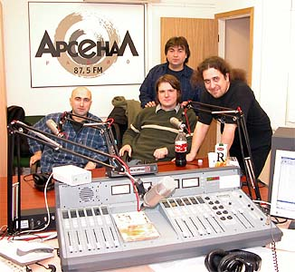 |
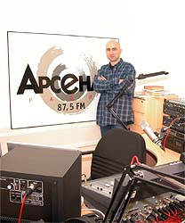 |
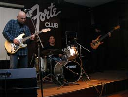 |
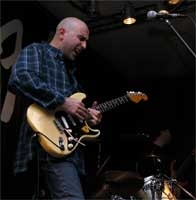 |
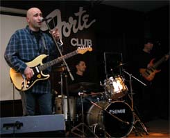 |
Вновь по средам в клубе B.B.King проходят блюзовые джемы с интересными фольклерными сюрпризами.
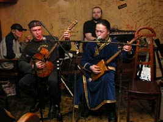 |
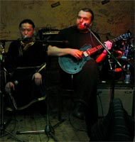 |
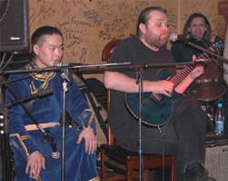 |
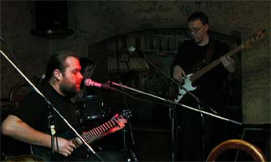 |
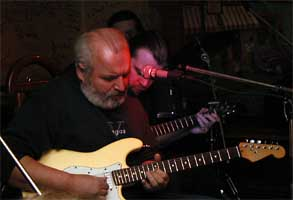 |
|
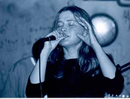 |
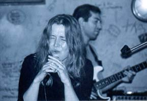 |
*
*
Владимир ПУХОВ пишет для газеты "Курьер Карелии":
Несбыточная мечта, обман воображения - так определяется слово "иллюзия" в словарях. Такое имя дали первому декабрьскому фестивалю блюза в Петрозаводске его организаторы. Возможно, они не очень верят появлению в нашем городе мастеров блюза мирового или российского класса, как это было недавно в Москве и Санкт-Петербурге на знаменитом Efes Pilsener Festival Blues.
С другой стороны проведение фестиваля в Петрозаводске могло стать приветствием недавнему визиту короля рок-н-ролла Чака Берри в Россию. Но парад классического, традиционного рока и корневого блюза в таком музыкальном городе, как наш, не мог не состояться. В гости к петрозаводским блюзменам были командированы несколько групп из Москвы, Питера и Сегежи. Стоит отметить, что жанровые стили участников фестиваля были весьма разнообразны. От фольклорно-этнических песен с рок-уклоном групп "Берега" (Сегежа), "Рада и терновник" (Москва), но прозвучавших довольно монотонно у последних, до чистого, импровизационного, инструментального джаза в исполнении Jazz trio из Петрозаводска.
"Жизнь - это блюз", - заявила стартовавшая группа No name и с ходу выдала традиционную 12-тактовую гитарную радость публике. Продолжили торжество блюзового настроения музыканты "Maya People" с вокалисткой Анной Скалдиной. Приятной неожиданностью ее выступления стала композиция Summer Time, классика жанра. Вся команда уверенно справилась с высокой планкой исполнения этого известного произведения, так называемой традиции. Так же серьезно сыграло собственные джазовые темы гитариста Алексея Васильева Jazz trio (барабанщик Евгений Климов, бас Олег Ложкин). Старательно выглядел блюзовый Blansh, продолжающий поиски оптимального состава. Лучшим в данном своеобразном Blues club, по мнению многих зрителей, был сегежский "Северо-Западный лес" во главе с лидером, вокалистом и гитаристом Евгением Шетько. Номера "Ребольский тракт", "13-й вагон" и "Родное ОАО" были поданы как изысканный продукт гурмана блюза, каким всегда был и есть автор композиций Евгений Шетько. Явным хэдлайнером фестиваля стал и петрозаводский "Трибунал". Его концертная программа - это мощный, атакующий залп установки "град", не дающий опомниться и перевести дыхание. Такое впечатляет и, значит, имеет право на существование. Особенно хороша лирика, в которой искренний романтизм лучших традиций русского рока.
Жаль, что публики в зале было маловато. Для рок-н-ролла и блюза, которые, как правило, собирают молодежные аншлаги, это даже обидно. Но обилие концертов в городе, многочисленные клубы отбили часть зрителей. Ровно как и отсутствие должной и активной рекламы фестиваля.
*
В FM-эфире Санкт-Петербурга на радио "ROKS" открывается новая радиопрограмма о блюзе: "Блюз-Бизнес". В "Известиях Петербурга" об этом пишет Ирина ОРЛОВА: "Задача авторов программы в том, чтобы показать блюз как живую развивающуюся музыку, рассказать об альбомах и песнях, предоставить слушателю некоторые факты биографии артистов, интересную статистику. Всех, кто любит хорошую музыку, ждут на частоте 102 МГц в понедельник в 22.00 (повтор в субботу в 19.00)." Далее...
*
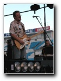
Екатеринбургская группа "Blues Doctors" приступила к записи своего первого альбома. План пока такой: "You Upset Me Baby" (B.B.King), "Ain`t No Blind"(L.Fulson), "I`m Tore Down" (F.King/S.Thompson), "Night Life" ( Breeland /W.Nelson), "Crazy Music", "You`re My Woman". В нынешнем году "Блюзовые Доктора" произвела весьма положительное впечатление на московскую блюзовую общественность своими выступлениям на фестивалях "Blues.Ru-03" и "Очаково-блюз", "Харп-Фест VI". Диск будет встречен с доброжелательно - как минимум.*
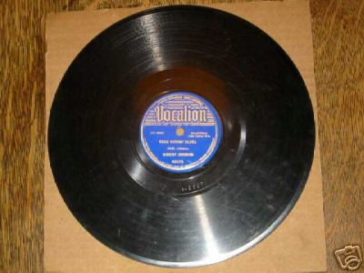
Старые пластинки тоже иногда ценятся высоко. Один клиент интернет-аукциона ebay выставил на продажу два лота: фарфоровую статуэтку, изображающую святое семейство, за 9.99$; и пластинку Роберта Джонсона на 78 об/мин с песнями "Believe I'll Dust My Broom" и "Dead Shrimp Blues" - с начальной стартовой ценоа на 7.777$.*
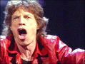
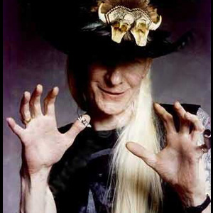
Легендарный блюз-роковый гитарист Джонни Уинтер завершил запись своего долгожданного альбома, который должен выйти в свет к его дню рождения в феврале 2004г. В записи в качестве соавтора нескольких песен и второго гитариста принимал участие Пол Нелсон (Paul Nelson), известный специалист по гитарному хеви-металл-року.*
8 февраля 2004г. в Лос-Анджелесе будет проходитm XLVI церемония награждения премии "Грэмми", высшей награды музыкального бизнеса. Некоторые из номинаций затрагивают блюзовую музыку.
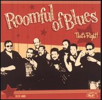
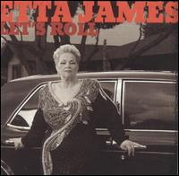
Кроме того, любителям блюза небезразличны следующие номинанты:
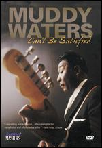
*
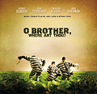
Le Fabuleux Destin deФильм братьев Коэн "О, где же ты, брат" вместе с вольной американизацией гомеровского сюжета о долгом возвращении Одиссея домой, предлагал и замечательное обозрение жанров народной музыки США времен Великой депрессии 30-х годов. Все музыкальные номера были записаны специально для фильма, кроме одного - спиричуэла о "Бедном Лазаре" (Po' Lazarus). Его в кадре исполняла кандальная команда каторжан на строительстве дороги в самом начале фильма, и сцена эта сразу создавала полное ощущение подлинности последующих фантастических событий.
Запись сделал неутомимый этнограф Алан Ломакс, посетив в 1959г. исправительное заведение штата Миссиссиппи. Записывал на лесосеке, а не на строительстве дороги, но в остальном практически в тех же условиях, что показаны в кинокартине: рабочие в кандалах, запевала дает строчку, затем все подтягивают, дабы работа велась в одном дружном ритме. Запевал некто Джеймс Картер. В конце 90-х запись разыскал в архивах Ломакса современный музыковед, продюсер и этнограф Ти-Боун Бурнетт (T-Bone Burnett). Она настолько запала ему в душу, что, когда еще два года спустя именно к нему обратились братья Коэн с предложением быть музыкальным директором их историко-философской комедии, Бурнетт сразу сказал, что без "Бедного Лазаря" им не обойтись в такой истории.
Фильм имел успех, как и его саундтрек. К весне 2002г. альбом с музыкой из фильма разошелся тиражом более 5.000.000 экз., получил титул "Альбома года" и пять премий "Грэмми". Предполагалось, что главный исполнитель давным-давно умер. А оказалось - жив! Алан Ломакс был очень педантичным альтруистом, и тщательно записывал не только имена исполнителей, но и номер их страхового полиса. Вот по этому полису и был найден 76-летний Джеймс Картер, проживавший с семьей в Чикаго, в Вест-Сайде, в обычной квартире многоквартирного дома.
Анна, дочь Алана Ломакса, и Дон Флеминг, лицензионный директор фонда Ломакса, нанесли ему торжественный визит и вручили платиновый диск и первые отчисления за использование его записи в размере 20.000$. Авторские отчисления были определены позже, их сумма не сообщается, но цифра вполне может перевалить за сто тысяч баксов - неплохая прибавка к пенсии. Желая впечатлить пенсионера, Анна Ломакс сказала, что по объему продаж его альбом опережает последний альбом Майкла Джексона. На что мистер Картер, скрутив самокрутку, сказал,: "Передайте Майклу, пусть не огорчается. Я чуть приторможу, чтобы он мог догнать". Еще неделю спустя он первый раз в жизни сел в самолет, чтобы лететь в Лос-Анджелес на церемонию вручения "Грэмми".
Меж тем, еще он сказал, что ничего не слышал ни об альбоме, ни о самом фильме, и едва смог вспомнить сам факт записи.
Джеймс Картер родился в крестьянской семье в Сан-Флауэре, Миссиссиппи, в 1926 году. В возрасте 18 лет пошел добровольцем на флот и во время Второй мировой войны служил на крейсере в Тихом океане. После войны демобилизовался, вернулся на родину, женился в 1947г. Однако вскоре получил первый из своих четырех тюремных приговоров: за воровство, грабеж и хранение опасного оружия. Он признавал, что сбился с пути. "После того, как ты повидаешь мир, поучаствуешь в боевых действиях, ты возвращаешься домой и не можешь не ожесточиться," - говорил он. Но утверждал, что его вина слишком преувеличена и приговор несправедливо жесток. "Там, в Миссиссиппи, - говорил он, - законом пользовались, чтобы тебя потопить. Сколько унижений нам доставалось! И вся эта каторга была штабом расовой сегрегации. К нам относились не лучше, чем к рабам." В лагере, где он отбывал срок, тюремщики все еще использовали кнуты, а заключенных за деньги начальство направляло на строительство железной дороги. К тому времени "рабочие песни", которые заставляли всю бригаду работать в одном ритме, на воле почти не сохранились, но в тюрьме эта древняя традиция все еще существовала. И Ломакс считал, что это самая близкая форма к традициям, унаследованным от первых лет рабства в Америке.
Последний срок Картера закончился в 1967г. Он поспешил покинуть Юг, где еще сильны были позиции сегрегации, и поселился с женой в Чикаго. У него родились три дочери, одна стала брокером по недвижимости, другая - офицером полиции. Он никогда не пел тюремные песни дома - слишком горькие воспоминания они будили.
Джеймс Картер умер 26 ноября 2003г.
*
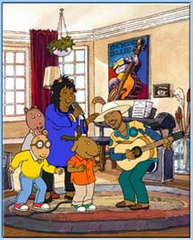
Ноябрьские новости о блюзеКоко Тейлор (Koko Taylor) и Тадж Махал (Taj Mahal) появятся в популярном детском мультсериале "Артур". Действие происходит в неком Элвуд-Сити, который населяют всякие забавные зверушки. Коко и Тадж появляются в серии для того, чтобы ободрить и вдохновить детишек слушать и играть блюз. Королева блюза предстает в образе медведицы. Вероятно, Тадж Махал должен был играть братца-кролика, но больше он похож сам на себя, только из белой шляпы торчат длинные кроличьи уши.
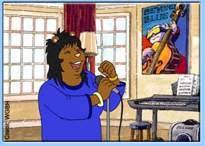
*
В конце ноября Alligator Records выпускает несколько альбомов, в которых известные музыканты готовят сюрпризы своим давним слушателям.
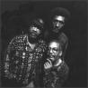
"Братья Холмс" выпускают уже второй альбом на "Аллигаторе". Предыдущий представлял собой спиричуэлсы, записанные не без вкраплений хип-хопа. Нынешний - "Простые истины" (SIMPLE TRUTHS) - более светский и более традиционный. Кроме сочинений самих братьев, предлагается их трактовка песен Боба Марли и Хэнка Уилльямса. Альбом продюсирует Крейг Стрит, который в этом году был триумфатором на вручении премий Грэмми - за его работу над пластинкой мега-звезды Норы Джоунс.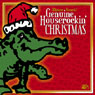
К рождеству "Аллигатор" подготовил еще один альбом: GENUINE HOUSEROCKIN' CHRISTMAS! В его записи приняли участие едва ли не все звезды лейбла, включая королеву блюза Коко Тейлор. Часть песен традиционно для таких сборников благообразны. "Roomful of Blues", которые только в этом году присоединились к каталогу фирмы, спрашивают "Санта-Клаус, знаешь ли ты, что такое блюз?" Шемекия Коплэнд просит: "Санта, задержись на подольше". А "Братья Холмс" рассказывают о Санте, который предпочитает заходить через черный ход (Back Door Santa). Дейв Хоул дает советы, как откормить индюшку (Fattening Up The Turkey). Ну и профессиональные ерники "Маленький Чарли и ночные коты" не могут не подколоть: "Снова Рождество (траться, траться, траться)" (LITTLE CHARLIE AND THE NIGHTCATS - Christmas Time Again (Spend, Spend, Spend)).*
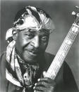
Общество Alabama Blues Project, которое в этом году было удостоено награды "За поддержку блюза" (Keeping The Blues Alive (KBA)) от Блюзового Фонда (Blues Foundation), организовало 21 и 11 ноября концерт в поддержку Эдди Кирклэнда (Eddie Kirkland). 75-летний ветеран чикагского блюза недавно перенес операцию на сердце и сейчас постепенно выздоравливает. Концерт призван собрать средства на оплату медицинских расходов. В нем приняли участие Willie King и Debbie Bond.*
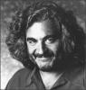
Пришло сообщение о внезапной кончине прославленного композитора и дирижера Майкла Кеймена. Сердечный приступ сразил его 18 ноября в его доме в Лондоне. Он писал музыку к популярным кинобоевикам, вроде "Смертельного оружия". Но любителям рок-музыки он хорошо знаком как аранжировщик и дирижер симфонического оркестра на записях "Пинк Флойд" и "Металлики". Кеймен родился в Нью-Форке в 1948г. С двухлетнего возраста играет на фортепиано. Настоящий вундеркинд, он в детстве научился играть на гитаре, габое и кларнете. В доме его родителей часто бывали их друзья Хьюдди Ледбеттер и Питер Сигер. Изучая классическую музыку в прославленной школе Джулиард, он одновременно играл фолк-блюз в джаг-бенде. Позже, параллельно с сочинением музыки для классических балетных постановок, он экспериментировал с техно- и рок-музыкой. Среди современных симфо-профи нет другого музыканта, столь же образованного, опытного и не утратившего вдохновения за годы работы.*
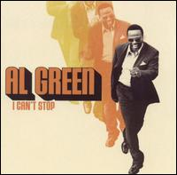
18 ноября - дата официального выпуска лейблом Blue Notes Records нового альбома вокалиста Эла Грина "Я не могу остановиться" (I Can't Stop). Это первый соул-альбом Грина за два десятилетия без малого. В 1976 году Эл Грин отказался от наркотиков и прочих прелестей рокнролльного образа жизни. Он стал проповедником и руководил хором в своей церкви в Мемфисе под названием the Full Gospel Tabernacle. Сейчас Грину 57 лет, а продюсеру Вилли Митчеллу - 75. Они давние знакомые, Митчелл продюсировал хитовые альбомы Грина с 1969г. по 1976г. Но хорошее знакомство не означало, что в нынешней работе не возникало трений. Митчелл точно знал, какого звучания он хочет добиться, и был непреклонен. Альбом должно считать продолжением стаксовских традиций исполнения музыки соул - и даже его оформление выдержано в стиле тех лет.*
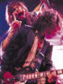
Любители тяжелого блюза всегда находили блюзовые приметы в музыке группы "Аэросмит" (Aerosmith). Но любителей собственно блюза застанет врасплох сообщение о том, что группа работает над блюзовым альбом. Еще не решено, записывать ли его на ранчо гитариста Джо Перри, или воспользоваться концертными записями. Прежде всего, говорит Перри, хочется, чтобы ощущение спонтанности блюза проявлялось в этих записях. С другой стороны, реакция многотысячной аудитории придает им особую вибрацию. Перри назвал три блюзовых стандарта, которые прозвучат в альбоме. Это относительно малоизвестная песня Миссиссиппи Фреда МакДауэла "Назад, назад, поезд" (Back Back Train) и два архиклассических хита. "Крошка, пожалуйста не уходи", которую, как считает Перри, сочинил Мадди Уотерс (на самом деле ее автор Джо Уилльямс (Baby Please Don't Go)). Из репертуара Ареты Фрэнклин - "Я никогда так не любила мужчину" (I Never Loved a Man), которую аэросмитовсцам пришлось переименовать в "Никогда не любил так женщину" (Never Loved a Woman).*
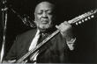
Лейбл M.C. объявил, что в марте следующего года будет выпущен новый альбом Роберта-младшего Локвуда. Он был записан в нынешнем году во время выступлений Локвуда в небольшом зале в Фениксе, Аризона. 89-летний музыкант играет на своей 12-струнной гитаре в той манере, какой научился у самого Роберта Джонсона. Позже он был сессионным музыкантом в чикагских студиях Chess. Альбом отметит и 60-летие со дня выхода первой пластинки Локвуда.*
Статуя на родине героя! Джеймс Браун скоро увидит свою статую в городе Огуста, в котором, по его словам, "все и началось. Поэтому я готов сделать для этого города все, что в моих силах. Я хочу, чтобы люди там воспользовались моим лицом, пока я еще жив. Используйте его - это не такое уж симпатичное лицо, но его знают все". Ежегодный Весенний музыкальный фестиваль в городском саду так же получит имя Джеймса Брауна.
*
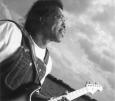
13 ноября было объявлено, что Президент США вручит Бадди Гаю "Медаль за заслуги в области искусств" (The 2003 Medal of Arts). Медаль вручается с 1984 года по решению специальной комиссии при Конгрессе США. Кандидатуры определяются в любой области искусств, а сама медаль является высшей степенью отличия в области культуры и искусств.*
17 ноября The Blues Foundation объявили программу заключительного этапа международного конкурса блюзовых исполнителей 2004 International Blues Challenge and BluesFirst. Под генеральным спонсорством пива Budweiser все события состоятся с 29 по 31 января 2004г. в Мемфисе. В первый день - прием и регистрация, во второй день пройдут мастер-классы и семинары, а затем торжественный ужин, посвященный подведению итогов Года блюза. Выступать будет Joe Bonamassa, и этот выбор не случаен. Джо ведет активную работу в поддержку блюза и обучении блюзу. Он внес свой вклад в программу Блюзового фонда по изучению блюза в школе, и продолжает перечислять в адрес фонда часть средств от продажи его последнего альбома Blues Deluxe. Его тур, посвященный новому альбому, пройдет по 50 городам США, и в каждом он планирует проведение открытых бесплатных уроков, как он уже делал в тех городах, которые успел посетить в рамках этого тура за последние 6 недель.
Сам конкурс проходил заочно на протяжении всего года, и желающие могли выслать свои записи в адрес оргкомитета. Финальные же состязания будут проходить в Мемфисе с 29 по 31 января, в разных номинациях будут соревноваться сольные выступления, дуэты и блюзбэнды. Концерты-соревнования пройдут в клубах легендарной улицы Beale. Наиболее интересный гитарист получит премию имени Алберта Кинга и приз: модель Flying V от корпорации Gibson Guitar. "Лучший блюзбэнд без контракта" (Best Unsigned Blues Band) получит приз в 25.000$, консультации по организации концертов, гастролей, рекламы, интернет-сайта и помощь в записи альбома. Группа получит возможность выступление на открытии церемонии вручения наград имени W.C.Handy 29 апреля 2004г., турне по Северной Америке и приглашение на выступление в концертах круиза Legendary Rhythm and Blues в 2005г. В субботу состоится и церемония вручения наград "За поддержку блюза" по 19 категориям.
 Грандиозный фестиваль
Грандиозный фестиваль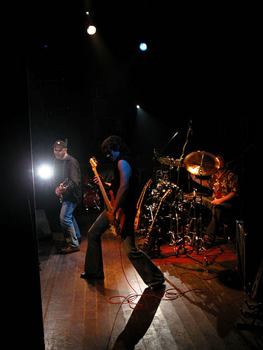
Blues Cousins записывают концерт для DVD.После триумфа на фестивале Маунтэйн Бейкер BLUES COUSINS выступили в клубе "Би-2". Кончерт собрал беспрецедентное количество публики, и перед входом в клуб выстроилась длинная очередь, огорчительная для тех, кто стоял в хвосте, но так радующая взгляд всякого, кто болеет за популярность блюза в России. "Кузены" были на диво энергичны, а сам Леван Ломидзе не забывал веселить публику и в перерывах между песнями. Концерт записывался на 4 видеокамеры, а звук - на многоканальник. Все будет смикшировано для издания на ДВД - первый блюзовый ДВД в России. Первая смикшированная и смонтированная песня будет показана в программе "Джазофрения" на телеканале "Культура".
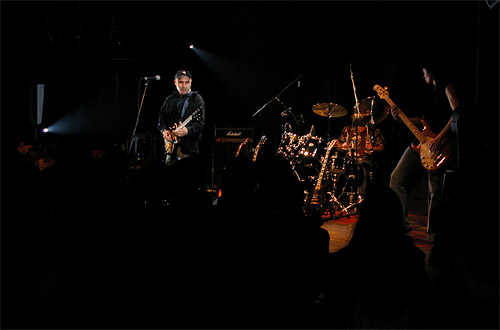
{kind=link}
{kind=link}
{kind=link}
{kind=link}
{kind=link}
{kind=link}
{kind=link}
{kind=link}
{kind=link}
{kind=link}
{kind=link}
{kind=link}